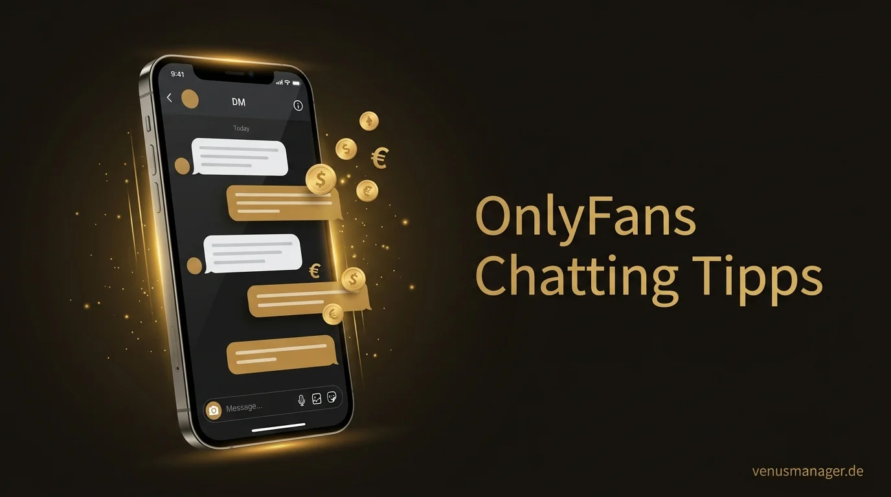
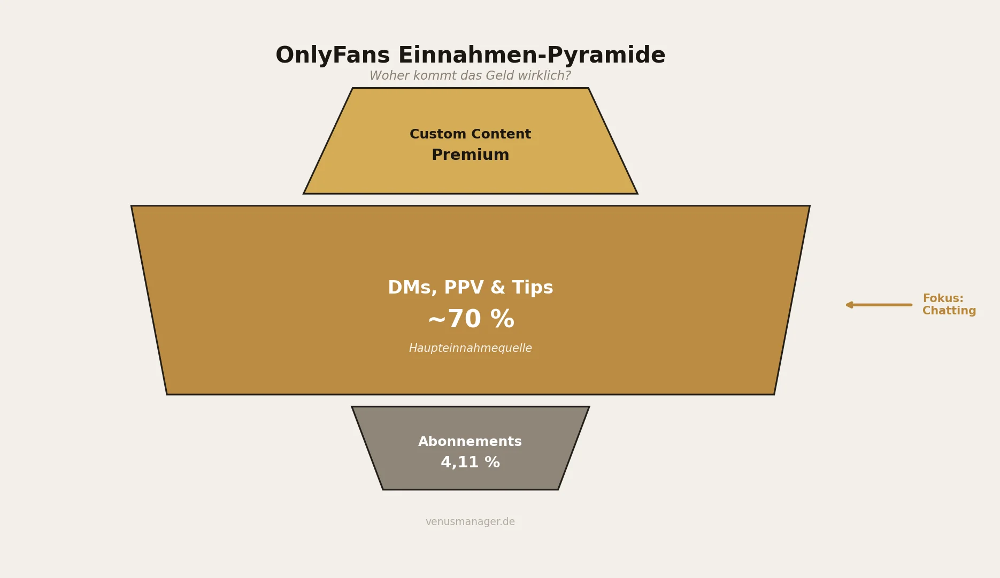
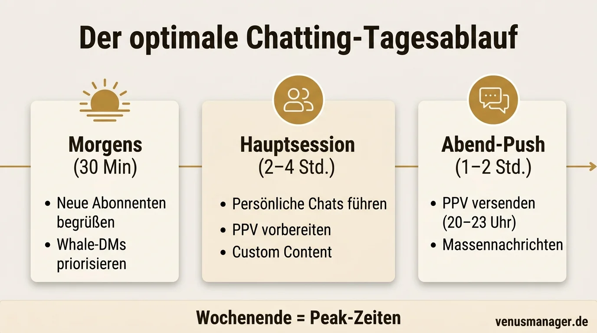

Die meisten OnlyFans Creator unterschätzen ihr größtes Umsatz-Tool: den Chat. Rund 70 % der Einnahmen von Top-Creatorn stammen aus Direktnachrichten, nicht aus Abonnements. Erfahre, wie du mit den richtigen Chatting-Strategien, PPV-Taktiken und Whale-Management deine Einnahmen verdoppeln kannst.

OnlyFans Chatting Tipps: So steigerst du deinen Umsatz über DMs (2026)
Die meisten Creator glauben, dass ihr Abo-Preis den Umsatz bestimmt. Die Realität sieht komplett anders aus: Rund 70 % der Einnahmen von Top-Creatorn stammen aus Direktnachrichten — nicht aus Abonnements. Subscriptions machen gerade einmal 4,11 % des Gesamtumsatzes aus. Das bedeutet: Dein Postfach ist dein eigentliches Geschäft. In diesem Artikel bekommst du ein vollständiges Framework für profitables Chatting — von der ersten Willkommensnachricht über PPV-Strategien bis zum Whale-Management.
Warum Chatting der wichtigste Umsatzhebel ist
Bevor du an deiner Chatting-Strategie arbeitest, solltest du verstehen, warum DMs so entscheidend sind.
OnlyFans hat 2024 einen Bruttoumsatz von 7,22 Milliarden US-Dollar erzielt. Der Großteil dieses Geldes fließt über private Nachrichten. Wenn du also gerade erst überlegst, mit OnlyFans zu starten, dann ist Chatting nicht ein netter Bonus — es ist das Kerngeschäft.

Die perfekte Willkommensnachricht
Der erste Kontakt entscheidet über alles. Wenn ein neuer Subscriber dein Profil abonniert und innerhalb von Minuten eine persönliche Nachricht bekommt, steigt die Wahrscheinlichkeit massiv.
Aufbau einer starken Willkommensnachricht
Persönliche Begrüßung — Verwende den Namen, wenn sichtbar
Wertschätzung — Bedanke dich für das Abo
Neugier wecken — Teaser auf exklusiven Content
Offene Frage — Startet den Dialog
Vorlagen für verschiedene Nischen
Der Schlüssel: Die Nachricht muss sich echt anfühlen. Kein generisches Template, das nach Massenversand klingt. Passe den Ton an deine Nische und Persönlichkeit an.
Massennachrichten vs. persönliche DMs: Die hybride Strategie
Du brauchst beides — Masse und Klasse. Entscheidend ist, wann du was einsetzt.
- Ankündigungen (neues Shooting, neues Video, Sale)
- Saisonale Aktionen (Feiertage, Black Friday)
- Allgemeine PPV-Drops für das gesamte Publikum
- Reaktivierung inaktiver Subscriber
- Nach jedem Kauf — persönlicher Dank, Feedback einholen
- Whale-Pflege — Top-Spender immer individuell
- Custom Requests — alles was verhandelt wird
- Beschwerden oder Fragen — nie Massennachricht
Die 70/30-Regel
Plane deine Zeit nach dieser Regel: Die persönlichen Gespräche bringen das Geld. Massennachrichten sind der Hebel, um Gespräche zu starten.
PPV-Nachrichten, die wirklich verkaufen
Pay-Per-View ist das Herzstück deiner Chatting-Strategie. Hier wird aus einem Subscriber ein zahlender Kunde.
Preisgestaltung
| Content-Typ | Preisrange |
|---|---|
| Einzelbilder (exklusiv) | 5–15 EUR |
| Kurzvideos (1–3 Min.) | 15–30 EUR |
| Längere Videos (5+ Min.) | 30–50 EUR |
| Premium-Sets / Bundles | 50–75 EUR |
| Custom Content | 50–300+ EUR |
Anatomie einer PPV-Nachricht, die konvertiert
Kontext schaffen — Kurzgeschichte oder Background
Teaser-Bild oder -Clip — Neugier wecken, ohne alles zu zeigen
Klares Angebot — Was bekommt der Käufer genau?
Preis — Transparent und selbstbewusst
Dringlichkeit (optional) — Zeitlich begrenzt oder limitierte Stückzahl
Ich habe gestern Abend spontan ein Set geschossen, das ich gar nicht geplant hatte. Ist viel intimer geworden als gedacht. Hier ist ein kleiner Vorgeschmack... [Teaser-Bild]. Das komplette Set mit 12 Bildern und einem kurzen Clip bekommst du für 25 EUR. Soll ich es dir freischalten?
Timing und Frequenz
- Beste Sendezeiten: Freitag bis Samstag, 20 bis 23 Uhr
- Maximale Frequenz: 2 bis 3 PPV-Nachrichten pro Woche und Fan
- Erwartbare Conversion Rate: 10 bis 20 % (bei gut segmentierter Zielgruppe)
Whale-Management: Deine wichtigsten Kunden pflegen
Whales sind die Subscriber, die überproportional viel ausgeben. Typischerweise generieren die obersten 0,01 % der Fans über 20 % des Gesamtumsatzes.
Identifiziere deine Whales aktiv
Überprüfe wöchentlich deine Umsatzstatistiken. Wer hat am meisten ausgegeben? Wer kauft regelmäßig? Diese Fans verdienen besondere Aufmerksamkeit.
Antworte Whales immer zuerst
Wenn du morgens dein Postfach öffnest, gehen Whale-Nachrichten vor. Wartezeiten sind für normale Subscriber akzeptabel — für Whales nicht.
Biete proaktiv Custom Content an
Frag gezielt nach Wünschen. Custom Content liegt typischerweise zwischen 50 und 300+ EUR, abhängig von Aufwand und Exklusivität.
Schaffe Exklusivität
Gib Whales früheren Zugang zu neuem Content, exklusive Previews oder besondere Aufmerksamkeit. Das VIP-Gefühl bindet langfristig.
Übertreibe es nicht mit dem Verkaufen
Whales merken, wenn sie nur als Geldquelle behandelt werden. Baue echte Verbindung auf: nach ihrem Tag fragen, Details merken, authentisch bleiben.
Einwandbehandlung: Die 4 häufigsten Einwände
Im Chatting wirst du regelmäßig auf Einwände stoßen. Wie du damit umgehst, entscheidet über deinen Umsatz.
Der tägliche Chatting-Workflow
Hier ist ein erprobter Tagesablauf, der dich von „ich hab keine Zeit“ zu konstantem Umsatz bringt.
- Neue Subscriber begrüßen — Willkommensnachrichten an alle, die über Nacht abonniert haben
- Whale-Check — Hat einer deiner Top-Fans geschrieben? Sofort antworten
- Nachrichten sichten — Überblick verschaffen, priorisieren
- Persönliche Chats führen — Gespräche vertiefen, auf Nachrichten antworten
- PPV vorbereiten — Content auswählen, Teaser erstellen, Nachrichten vorformulieren
- Custom Requests bearbeiten — Anfragen beantworten, Preise kommunizieren
- Massennachrichten planen — Für den Abend vorbereiten
- PPV-Nachrichten versenden — In der Peak-Zeit, wenn die meisten Fans online sind
- Massennachrichten rausschicken — Ankündigungen und Teaser für den nächsten Tag
- Letzte persönliche Antworten — Offene Gespräche abschließen

KI-Chatbots und Automatisierung
Automatisiertes Chatting wächst schnell. Aber die Technologie hat klare Grenzen: Sie hilft dir, schneller zu reagieren — sie ersetzt nicht die Verbindung.
- Erste Antworten — schnelle Reaktionszeiten rund um die Uhr
- FAQ beantworten — Standardfragen zu Preisen, Content-Typen
- Gesprächseinstiege — einfache Konversation starten
- Massennachrichten — Versandzeiten optimieren, A/B-Tests
- Echte Verbindung aufbauen — Fans merken den Unterschied
- Whale-Gespräche führen — dafür ist zu viel Kontext nötig
- Custom Requests verhandeln — braucht Urteilsvermögen
- Einwände behandeln — zu nuanciert für aktuelle KI-Modelle
FAQ: Die wichtigsten Fragen zu OnlyFans Chatting
Die Zahlen lügen nicht: 70 % deiner Einnahmen kommen aus DMs. Dein Feed bringt Subscriber rein. Dein Chatting macht sie zu zahlenden Kunden.
- Willkommensnachrichten innerhalb von 5 Minuten setzen den Standard
- Die 70/30-Regel gibt dir die richtige Zeitverteilung
- PPV-Nachrichten sind dein Umsatztreiber — maximal 2 bis 3 pro Woche, dafür mit echtem Mehrwert
- Whale-Management ist Beziehungsarbeit, kein reines Verkaufen
- Struktur schlägt Improvisation — ein fester Tagesablauf macht den Unterschied
Wenn du das Chatting nicht alleine stemmen willst oder kannst, unterstützt dich das Team von Venus Manager dabei — vom Chatting über Content-Strategie bis zur kompletten Account-Betreuung.
Dein Chatting. Unser Team.
Lass uns das Chatting professionell übernehmen, damit du dich auf Content konzentrieren kannst — unverbindlich und kostenlos kennenlernen.
Kostenloses Erstgespräch buchen